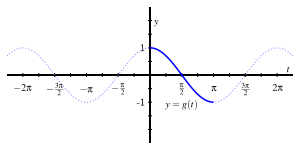
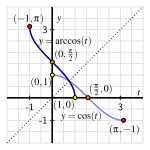
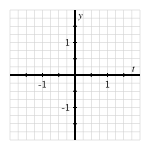
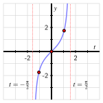
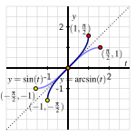
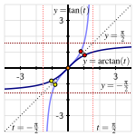
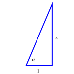

Is it possible for a periodic function that fails the Horizontal Line Test to have an inverse?
For the restricted cosine, sine, and tangent functions, how do we define the corresponding arccosine, arcsine, and arctangent functions?
What are the key properties of the arccosine, arcsine, and arctangent functions?
In our prior work with inverse functions, we have seen several important principles, including
A function \(f\) has an inverse function if and only if there exists a function \(g\) that undoes the work of \(f\text{.}\) Such a function \(g\) has the properties that \(g(f(x)) = x\) for each \(x\) in the domain of \(f\text{,}\) and \(f(g(y)) = y\) for each \(y\) in the range of \(f\text{.}\) We call \(g\) the inverse of \(f\text{,}\) and write \(g = f^{-1}\text{.}\)
A function \(f\) has an inverse function if and only if the graph of \(f\) passes the Prueba de la Línea Horizontal.
When \(f\) has an inverse, we know that writing “\(y = f(t)\)” and “\(t = f^{-1}(y)\)” say the exact same thing, but from two different perspectives.
The trigonometric functions \(f(t) = \sin(t)\text{,}\)\(g(t) = \cos(t)\text{,}\) and \(h(t) = \tan(t)\) are periodic, so each fails the horizontal line test, and thus these functions on their full domains do not have inverse functions. At the same time, it is reasonable to think about changing perspective and viewing angles as outputs in certain restricted settings. For instance, we may want to say both
depending on the context in which we are considering the relationship between the angle and side length.
It’s also important to understand why the issue of finding an angle in terms of a known value of a trigonometric function is important. Suppose we know the following information about a right triangle: one leg has length \(2.5\text{,}\) and the hypotenuse has length \(4\text{.}\) If we let \(\theta\) be the angle opposite the side of length \(2.5\text{,}\) it follows that \(\sin(\theta) = \frac{2.5}{4}\text{.}\) We naturally want to use the inverse of the sine function to solve the most recent equation for \(\theta\text{.}\) But the sine function does not have an inverse function, so how can we address this situation?
While the original trigonometric functions \(f(t) = \sin(t)\text{,}\)\(g(t) = \cos(t)\text{,}\) and \(h(t) = \tan(t)\) do not have inverse functions, it turns out that we can consider restricted versions of them that do have corresponding inverse functions. We thus investigate how we can think differently about the trigonometric functions so that we can discuss inverses in a meaningful way.
Preview Activity4.3.1.
Consider the plot of the standard cosine function in Figure 4.3.1 along with the emphasized portion of the graph on \([0,\pi]\text{.}\)

Figure4.3.1.The cosine function on \([-\frac{5\pi}{2},\frac{5\pi}{2}]\) with the portion on \([0,\pi]\) emphasized.
Let \(g\) be the function whose domain is \(0 \le t \le \pi\) and whose outputs are determined by the rule \(g(t) = \cos(t)\text{.}\)Note well: \(g\) is defined in terms of the cosine function, but because it has a different domain, it is not the cosine function.
What is the domain of \(g\text{?}\)
What is the range of \(g\text{?}\)
Does \(g\) pass the horizontal line test? Why or why not?
Explain why \(g\) has an inverse function, \(g^{-1}\text{,}\) and state the domain and range of \(g^{-1}\text{.}\)
We know that \(g(\frac{\pi}{4}) = \frac{\sqrt{2}}{2}\text{.}\) What is the exact value of \(g^{-1}(\frac{\sqrt{2}}{2})\text{?}\) How about the exact value of \(g^{-1}(-\frac{\sqrt{2}}{2})\text{?}\)
Determine the exact values of \(g^{-1}(-\frac{1}{2})\text{,}\)\(g^{-1}(\frac{\sqrt{3}}{2})\text{,}\)\(g^{-1}(0)\text{,}\) and \(g^{-1}(-1)\text{.}\) Use proper notation to label your results.
Subsection4.3.1The arccosine function
For the cosine function restricted to the domain \([0,\pi]\) that we considered in Preview Activity 4.3.1, the function is strictly decreasing on its domain and thus passes the Horizontal Line Test. Therefore, this restricted version of the cosine function has an inverse function; we will call this inverse function the arccosine function.
Definition4.3.2.
Let \(y = g(t) = \cos(t)\) be defined on the domain \([0,\pi]\text{,}\) and observe \(g : [0,\pi] \to [-1,1]\text{.}\) For any real number \(y\) that satisfies \(-1 \le y \le 1\text{,}\) the arccosine of \(y\), denoted
\begin{equation*}
\arccos(y)
\end{equation*}
is the angle \(t\) satisfying \(0 \le t \le \pi\) such that \(\cos(t) = y\text{.}\)
Note particularly that the output of the arccosine function is an angle. In addition, recall that in the context of the unit circle, an angle measured in radians and the corresponding arc length along the unit circle are numerically equal. This is why we use the “arc” in “arccosine”: given a value \(-1 \le y \le 1\text{,}\) the arccosine function produces the corresponding arc (measured counterclockwise from \((1,0)\)) such that the cosine of that arc is \(y\text{.}\)
We recall that for any function with an inverse function, the inverse function reverses the process of the original function. We know that “\(y = \cos(t)\)” can be read as saying “\(y\) is the cosine of the angle \(t\)”. Changing perspective and writing the equivalent statement “\(t = \arccos(y)\)”, we read this statement as “\(t\) is the angle whose cosine is \(y\)”. Just as \(y = f(t)\) and \(t = f^{-1}(y)\) say the same thing for a function and its inverse in general,
\begin{equation*}
y = \cos(t) \ \text{ and } \ t = \arccos(y)
\end{equation*}
say the same thing for any angle \(t\) that satisfies \(0 \le t \le \pi\text{.}\) We also use the equivalent notation \(t = \cos^{-1}(y)\) interchangeably with \(t = \arccos(y)\text{.}\) We read “\(t = \cos^{-1}(y)\)” as “\(t\) is the angle whose cosine is \(y\)” or “\(t\) is the inverse cosine of \(y\)”. Key properties of the arccosine function can be summarized as follows.
Properties of the arccosine function.
The restricted cosine function, \(y = g(t) = \cos(t)\text{,}\) is defined on the domain \([0,\pi]\) with range \([-1,1]\text{.}\) This function has an inverse function that we call the arccosine function, denoted \(t = g^{-1}(y) = \arccos(y)\text{.}\)
The domain of \(y = g^{-1}(t) = \arccos(t)\) is \([-1,1]\) with range \([0,\pi]\text{.}\)
The arccosine function is always decreasing on its domain.
At right, a plot of the restricted cosine function (in light blue) and its corresponding inverse, the arccosine function (in dark blue).

Just as the natural logarithm function allowed us to rewrite exponential equations in an equivalent way (for instance, \(y = e^t\) and \(t = \ln(y)\) say the exact same thing), the arccosine function allows us to do likewise for certain angles and cosine outputs. For instance, saying \(\cos(\frac{\pi}{2}) = 0\) is the same as writing \(\frac{\pi}{2} = \arccos(0)\text{,}\) which reads “\(\frac{\pi}{2}\) is the angle whose cosine is \(0\)”. Indeed, these relationships are reflected in the plot above, where we see that any point \((a,b)\) that lies on the graph of \(y = \cos(t)\) corresponds to the point \((b,a)\) that lies on the graph of \(y = \arccos(t)\text{.}\)
Activity4.3.2.
Use the special points on the unit circle (see, for instance, Figure 2.3.1) to determine the exact values of each of the following numerical expressions. Do so without using a computational device.
\(\displaystyle \arccos(\frac{1}{2})\)
\(\displaystyle \arccos(\frac{\sqrt{2}}{2})\)
\(\displaystyle \arccos(\frac{\sqrt{3}}{2})\)
\(\displaystyle \arccos(-\frac{1}{2})\)
\(\displaystyle \arccos(-\frac{\sqrt{2}}{2})\)
\(\displaystyle \arccos(-\frac{\sqrt{3}}{2})\)
\(\displaystyle \arccos(-1)\)
\(\displaystyle \arccos(0)\)
\(\displaystyle \cos(\arccos(-\frac{1}{2}))\)
\(\displaystyle \arccos(\cos(\frac{7\pi}{6}))\)
Subsection4.3.2The arcsine function
We can develop an inverse function for a restricted version of the sine function in a similar way. As with the cosine function, we need to choose an interval on which the sine function is always increasing or always decreasing in order to have the function pass the horizontal line test. The standard choice is the domain \([-\frac{\pi}{2}, \frac{\pi}{2}]\) on which \(f(t) = \sin(t)\) is increasing and attains all of the values in the range of the sine function. Thus, we consider \(f(t) = \sin(t)\) so that \(f : [-\frac{\pi}{2}, \frac{\pi}{2}] \to [-1,1]\) and hence define the corresponding arcsine function.
Definition4.3.3.
Let \(y = f(t) = \sin(t)\) be defined on the domain \([-\frac{\pi}{2},\frac{\pi}{2}]\text{,}\) and observe \(f : [-\frac{\pi}{2},\frac{\pi}{2}] \to [-1,1]\text{.}\) For any real number \(y\) that satisfies \(-1 \le y \le 1\text{,}\) the arcsine of \(y\), denoted
\begin{equation*}
\arcsin(y)
\end{equation*}
is the angle \(t\) satisfying \(-\frac{\pi}{2} \le t \le \frac{\pi}{2}\) such that \(\sin(t) = y\text{.}\)
Activity4.3.3.
The goal of this activity is to understand key properties of the arcsine function in a way similar to our discussion of the arccosine function in Subsection 4.3.1.
Using Definition 4.3.3, what are the domain and range of the arcsine function?
Determine the following values exactly: \(\arcsin(-1)\text{,}\)\(\arcsin(-\frac{\sqrt{2}}{2})\text{,}\)\(\arcsin(0)\text{,}\)\(\arcsin(\frac{1}{2})\text{,}\) and \(\arcsin(\frac{\sqrt{3}}{2})\text{.}\)
On the axes provided in Figure 4.3.4, sketch a careful plot of the restricted sine function on the interval \([-\frac{\pi}{2},\frac{\pi}{2}]\) along with its corresponding inverse, the arcsine function. Label at least three points on each curve so that each point on the sine graph corresponds to a point on the arcsine graph. In addition, sketch the line \(y = t\) to demonstrate how the graphs are reflections of one another across this line.

Figure4.3.4.Axes for plotting the restricted sine function and its inverse, the arcsine function.
True or false: \(\arcsin(\sin(5\pi)) = 5\pi\text{.}\) Write a complete sentence to explain your reasoning.
Subsection4.3.3The arctangent function
Finally, we develop an inverse function for a restricted version of the tangent function. We choose the domain \((-\frac{\pi}{2}, \frac{\pi}{2})\) on which \(h(t) = \tan(t)\) is increasing and attains all of the values in the range of the tangent function.
Definition4.3.5.
Let \(y = h(t) = \tan(t)\) be defined on the domain \((-\frac{\pi}{2},\frac{\pi}{2})\text{,}\) and observe \(h : (-\frac{\pi}{2},\frac{\pi}{2}) \to (-\infty,\infty)\text{.}\) For any real number \(y\text{,}\) the arctangent of \(y\), denoted
\begin{equation*}
\arctan(y)
\end{equation*}
is the angle \(t\) satisfying \(-\frac{\pi}{2} \lt t \lt \frac{\pi}{2}\) such that \(\tan(t) = y\text{.}\)
Activity4.3.4.
The goal of this activity is to understand key properties of the arctangent function.
Using Definition 4.3.5, what are the domain and range of the arctangent function?
Determine the following values exactly: \(\arctan(-\sqrt{3})\text{,}\)\(\arctan(-1)\text{,}\)\(\arctan(0)\text{,}\) and \(\arctan(\frac{1}{\sqrt{3}})\text{.}\)
A plot of the restricted tangent function on the interval \((-\frac{\pi}{2},\frac{\pi}{2})\) is provided in Figure 4.3.6. Sketch its corresponding inverse function, the arctangent function, on the same axes. Label at least three points on each curve so that each point on the tangent graph corresponds to a point on the arctangent graph. In addition, sketch the line \(y = t\) to demonstrate how the graphs are reflections of one another across this line.

Figure4.3.6.Axes for plotting the restricted tangent function and its inverse, the arctangent function.
Complete the following sentence: “as \(t\) increases without bound, \(\arctan(t)\)\(\ldots\)”.
Subsection4.3.4Summary
Any function that fails the Horizontal Line Test cannot have an inverse function. However, for a periodic function that fails the horizontal line test, if we restrict the domain of the function to an interval with no repeated outputs, we then determine a related function that does, in fact, have an inverse function. By choosing such an interval carefully, it is possible for us to develop the inverse functions of the restricted cosine, sine, and tangent functions.
We choose to define the restricted cosine, sine, and tangent functions on the respective domains \([0,\pi]\text{,}\)\([-\frac{\pi}{2}, \frac{\pi}{2}]\text{,}\) and \((-\frac{\pi}{2}, \frac{\pi}{2})\text{.}\) On each such interval, the restricted function is strictly decreasing (cosine) or strictly increasing (sine and tangent), and thus has an inverse function. The restricted sine and cosine functions each have range \([-1,1]\text{,}\) while the restricted tangent’s range is the set of all real numbers. We thus define the inverse function of each as follows:
For any \(y\) such that \(-1 \le y \le 1\text{,}\) the arccosine of \(y\) (denoted \(\arccos(y)\)) is the angle \(t\) in the interval \([0,\pi]\) such that \(\cos(t) = y\text{.}\) That is, \(t\) is the angle whose cosine is \(y\text{.}\)
For any \(y\) such that \(-1 \le y \le 1\text{,}\) the arcsine of \(y\) (denoted \(\arcsin(y)\)) is the angle \(t\) in the interval \([-\frac{\pi}{2}, \frac{\pi}{2}]\) such that \(\sin(t) = y\text{.}\) That is, \(t\) is the angle whose sine is \(y\text{.}\)
For any real number \(y\text{,}\) the arctangent of \(y\) (denoted \(\arctan(y)\)) is the angle \(t\) in the interval \((-\frac{\pi}{2}, \frac{\pi}{2})\) such that \(\tan(t) = y\text{.}\) That is, \(t\) is the angle whose tangent is \(y\text{.}\)
To discuss the properties of the three inverse trigonometric functions, we plot them on the same axes as their corresponding restricted trigonometric functions. When we do so, we use \(t\) as the input variable for both functions simultaneously so that we can plot them on the same coordinate axes.
The domain of \(y = g^{-1}(t) = \arccos(t)\) is \([-1,1]\) with corresponding range \([0,\pi]\text{,}\) and the arccosine function is always decreasing. These facts correspond to the domain and range of the restricted cosine function and the fact that the restricted cosine function is decreasing on \([0,\pi]\text{.}\)
Figure4.3.7.The restricted cosine function (in light blue) and its inverse, \(y = g^{-1}(t) = \arccos(t)\) (in dark blue).
Figure4.3.8.The restricted sine function (in light blue) and its inverse, \(y = f^{-1}(t) = \arcsin(t)\) (in dark blue).
The domain of \(y = f^{-1}(t) = \arcsin(t)\) is \([-1,1]\) with corresponding range \([-\frac{\pi}{2}, \frac{\pi}{2}]\text{,}\) and the arcsine function is always increasing. These facts correspond to the domain and range of the restricted sine function and the fact that the restricted sine function is increasing on \([-\frac{\pi}{2},\frac{\pi}{2}]\text{.}\)
The domain of \(y = f^{-1}(t) = \arctan(t)\) is the set of all real numbers with corresponding range \((-\frac{\pi}{2}, \frac{\pi}{2})\text{,}\) and the arctangent function is always increasing. These facts correspond to the domain and range of the restricted tangent function and the fact that the restricted tangent function is increasing on \((-\frac{\pi}{2},\frac{\pi}{2})\text{.}\)

Figure4.3.9.The restricted tangent function (in light blue) and its inverse, \(y = h^{-1}(t) = \arctan(t)\) (in dark blue).
Exercises4.3.5Exercises
1.
Without using a calculator, find all solutions to \(\displaystyle \cos(\theta) = \frac{\sqrt{3}}{2}\) in the interval \(0 \leq \theta \leq 2\pi\text{.}\) If there is more than one answer, enter your answers as a comma separated list. Your answers should be exact values (given as fractions, not decimal approximations).
\(\theta\) =
2.
Without using a calculator, find all solutions to \(\displaystyle \sin(\theta) = \frac{\sqrt{2}}{2}\) in the interval \(0 \leq \theta \leq 2\pi\text{.}\) If there is more than one answer, enter your answers as a comma separated list. Your answers should be exact values (given as fractions, not decimal approximations).
\(\theta\) =
3.
Without using a calculator, find all solutions to \(\displaystyle \tan(\theta) = 1\) in the interval \(0 \leq \theta \leq 2\pi\text{.}\) If there is more than one answer, enter your answers as a comma separated list. Your answers should be exact values (given as fractions, not decimal approximations).
\(\theta\) =
4.
Solve the equations below exactly. Give your answers in radians, and find all possible values for \(t\) in the interval \(0 \leq t \leq 2 \pi\text{.}\) If there is more than one answer, enter your solutions in a comma separated list.
(a) \(\displaystyle \sin{(t)} = \frac{\sqrt{3}}{2}\) when \(t =\)
(b) \(\displaystyle \cos{(t)} = \frac{\sqrt{2}}{2}\) when \(t =\)
(c) \(\displaystyle \tan{(t)} = -\sqrt{3}\) when \(t =\)
5.
Use the special points on the unit circle (see, for instance, Figure 2.3.1) to determine the exact values of each of the following numerical expressions. Do so without using a computational device.
For each of the following claims, determine whether the statement is true or false. If true, write one sentence to justify your reasoning. If false, give an example of a value that shows the claim fails.
For any \(y\) such that \(-1 \le y \le 1\text{,}\)\(\sin(\arcsin(y)) = y\text{.}\)
For any real number \(t\text{,}\)\(\arcsin(\sin(t)) = t\text{.}\)
For any real number \(t\text{,}\)\(\arccos(\cos(t)) = t\text{.}\)
For any \(y\) such that \(-1 \le y \le 1\text{,}\)\(\cos(\arccos(y)) = y\text{.}\)
For any real number \(y\text{,}\)\(\tan(\arctan(y)) = y\text{.}\)
For any real number \(t\text{,}\)\(\arctan(\tan(t)) = t\text{.}\)
7.
Let’s consider the composite function \(h(x) = \cos(\arcsin(x))\text{.}\) This function makes sense to consider since the arcsine function produces an angle, at which the cosine function can then be evaluated. In the questions that follow, we investigate how to express \(h\) without using trigonometric functions at all.
What is the domain of \(h\text{?}\) The range of \(h\text{?}\)
Since the arcsine function produces an angle, let’s say that \(\theta = \arcsin(x)\text{,}\) so that \(\theta\) is the angle whose sine is \(x\text{.}\) By definition, we can picture \(\theta\) as an angle in a right triangle with hypotenuse \(1\) and a vertical leg of length \(x\text{,}\) as shown in Figure 4.3.10. Use the Pythagorean Theorem to determine the length of the horizontal leg as a function of \(x\text{.}\)
Figure4.3.10.The right triangle that corresponds to the angle \(\theta = \arcsin(x)\text{.}\)
Figure4.3.11.The right triangle that corresponds to the angle \(\alpha = \arctan(x)\text{.}\)
What is the value of \(\cos(\theta)\) as a function of \(x\text{?}\) What have we shown about \(h(x) = \cos(\arcsin(x))\text{?}\)
How about the function \(p(x) = \cos(\arctan(x))\text{?}\) How can you reason similarly to write \(p\) in a way that doesn’t involve any trigonometric functions at all? (Hint: let \(\alpha = \arctan(x)\) and consider the right triangle in Figure 4.3.11.)